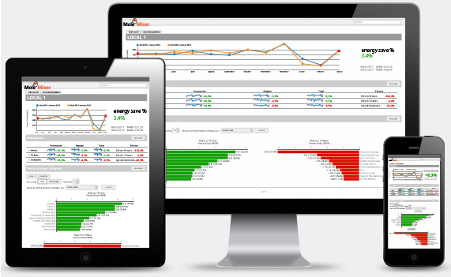

How it works
A software that acquires a crucial role for efficiency in the mining industry, “provide Better Productivity (same throughput at lower cost) with existing assets”.
Creating value with Big Data techniques and Physical models can be used to improvement the behavior and performance of grinding circuits in order to save energy.
{kind=link}
Data Base
The platform Mole Miner database is designed to efficiently process transactions billion.
Big Data
The platform Mole Miner uses big data that offers major improvements over its predecessor in analytics, traditional business intelligence (BI).
Reporting
Is able to produce reports tailored to each user and send them periodically and automatically..
Key Metrics:
- Savings with fewer equipment failures
- higher throughput
- reduced flow variations
- increased consistency of feed rates
- Optimize the Process for Break-through Performance
- Prevent Failure and Maintain Optimal Equipment Performance
- Use Predictive Analytics to Monitor Performance and Prevent Surprises
- Continuous Monitoring & Regular Tuning

Dashboard:
The display of information is done through web access with a simple display that hopes to answer as many questions of business in the least amount of screens.The information is available on different technological platforms, both web and mobile.
